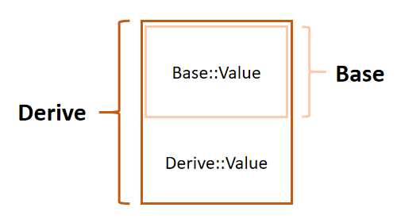

面向对象程序设计（Object-oriented programming, OOP）是种具有对象概念的程序编程典范，同时也是一种程序开发的抽象方针。
封装
装
装是指把数据与操作这些数据的函数绑定到一块，抽象成一个类。
C++11
引入移动语义之后，对于一个空类，编译器将为其默认生成以下
6 种特殊成员函数，且访问级别默认为
public（见下文）：默认构造函数、析构函数、拷贝构造函数、拷贝赋值运算符、移动构造函数、移动赋值运算符。
构造函数
所谓构造函数，便是以类名为函数名的一种特殊函数，无返回值，任意一个对象在创建时都会自动调用（在成员变量初始化之后），完成类成员变量的初始化以及基类（见下文）的初始化等工作。
其中，默认构造函数是初始化构造函数的一种特殊（无参）形式。所谓初始化构造函数，就是不以其他同类对象引用为参数的构造函数，即：
1 | class Foo { |
用户可以自定义初始化构造函数，但会覆盖编译器原先生成的默认构造函数。如果需要使用默认构造函数，则需显式声明。
1 | class Foo { |
拷贝构造函数/移动构造函数就是仅以同类对象左值引用/同类对象右值引用为参数的构造函数。
1 | class Foo { |
拷贝构造函数的形参也可以写为值传递，但这样会发生什么事呢？我们尝试调用值传递版本的拷贝构造函数
Foo foo(another_foo)，another_foo
因值传递而进行了一次形参拷贝，此时还需要调用一次拷贝构造函数，然后因值传递进行形参拷贝……直接死循环！而且值拷贝的过程也是申请内存的过程，接下来就看内存和
CPU
哪个先撑不住了~基于此，所有拷贝构造函数都应写为引用传递。
关于移动语义，请参见此文。
注意：想要用到的构造函数需声明为
public，否则创建对象时将报错，下面也是一样的~
赋值运算符
与构造函数不同，赋值运算符仅在对象创建完毕后才能调用，拷贝语义/移动语义与前面提到的类似。
1 | class Foo { |
需要将返回值写为本类引用，以实现连锁赋值。
那么下面这段代码，执行的是哪个函数呢？【拷贝构造函数】
1 | Foo foo1 = foo2; |
析构函数
析构函数以类名为函数名，需额外在前面加一个~，没有返回值，无需显式调用，一个对象的生命周期结束时，就会自动调用析构函数。析构函数主要完成释放对象内存的工作，但编译器默认生成析构函数只是尸位素餐，实际上什么都不干，真想利用析构函数做点什么的话，则需要自定义析构函数。
1 | class Foo { |
注意：析构函数没有参数，不能被重载，因此一个类只能有一个析构函数~
注意：new 出来的对象在堆上，如果不
delete 是不会自动执行析构函数的~
注意：尽管某个类是多态类，但其默认生成的析构函数是 non-virtual 的，需手动声明~
析构函数如果声明为
private，则无法在栈上创建对象。一般情况下都是要声明为public的。
封
封是指将这些数据与函数对外部隐藏，避免干扰与误用，从而确保安全。C++
通过三大访问修饰符支持这一特性，可访问级别默认为
private。
| 可访问级别 | 本类 | 友元类/函数 | 派生类 | 其它 |
|---|---|---|---|---|
public |
√ | √ | √ | √ |
protected |
√ | √ | √ | × |
private |
√ | √ | × | × |
1 | class Foo { |
继承
继承允许一个类（派生类）在另一个类（基类）的基础上进行设计，这使得创建和维护一个应用程序变得更容易，也达到了重用代码功能和提高执行效率的效果。
同样的，继承方式也有公有继承(public)，保护继承(protected)，私有继承(private)三种，如果未显式声明继承方式，则默认为私有继承。
- 公有继承：基类的公有/保护成员将成为派生类的公有/保护成员，基类的私有成员仍不能直接被派生类访问；
- 保护继承：基类的公有/保护成员将成为派生类的保护成员。
- 私有继承：基类的公有/保护成员将成为派生类的私有成员。
1 | class Base { |
上面展示了一个基本的继承过程。可以看到 Derived 可以将
Base 中的成员变量/函数进行覆盖，在 Derived
的命名空间中优先取 Derived
的成员。但覆盖后，基类的变量并不是消失了，而是依然可以通过
Base::value
进行访问，这是怎么做到的？类继承时，内存是如何分配的？不妨加入以下代码进行分析：
1 | std::cout << sizeof(Base) << ' ' << sizeof(Derived) << '\n'; |
可以看到，Derived 和 Base 的类大小分别为 4
和 8，恰好是 1 个 int 和 2 个 int 的大小，并且将 Derived
对象地址重新解读为 int*
时，发现有连续的一片内存分别存储了两个 int 值 1 与 2——这恰好是
Base 和 Derived 两个类对 value
初始化的值。这样一来就明朗许多——Derived
类对象的内存里最开始那一部分（4B）是专门分配给基类 Base
的，并且其内存布局为：

虚继承
再来点更复杂的情况：
1 | class Base { |
根据上面的输出，我们发现，Final 分别继承了
Derive1 与 Derive2，也为这两个直接基类分配了各
8B 的内存空间。并且，Final 中的内存布局也是先
Derive2 后 Derive1，这与 Final
类声明中继承列表中的基类顺序是一致的。
但很快也就发现了问题：Derive1 与 Derive2
的基类 Base 并不位于同一片内存，这就导致对
Derive1 的那个 Base 进行修改时，并不会影响
Derive2 的
Base，还产生了二义性（上面这段代码中，Final
无法使用 Base
的变量）与数据冗余。这是我们不希望发生的——我们通常反而更希望
Final 的族谱中只有唯一的 Base。
如何解决这个问题？答案为使用关键字 virtual
的虚继承。对于每个指定为 virtual
的不同基类，最终派生对象中仅含有该类型的一个基类子对象，即使该类在继承层级中出现多次也是如此，只要它每次都以
virtual 继承。
1 | class Base { |
多继承在现实应用场景中容易出问题，尽量避免使用多继承。
派生类构造顺序
直接贴代码，有助于理解。
1 | class B1 { |
不难发现，构造顺序为：
- 按继承列表顺序构造基类；
- 按成员变量列出顺序初始化成员变量，如果成员变量为某个类的对象，则调用相应构造函数；
- 调用自身构造函数；
而初始化列表中对基类、成员变量的初始化不会影响相对顺序，只会影响调用构造函数的版本，比如
B3(2) 使得基类 B3 调用了构造函数
B3(int)。
步骤 1, 2 中的类仍按同样的顺序递归构造。
析构顺序与构造顺序恰好相反。
多态
多态，即多种形态，能够使得不同的对象去完成同一件事时，产生不同的动作和结果。最常见的多态有静态多态与动态多态两种，
静态多态
重载
重载可以实现静态多态。编译器编译的过程中，首先遇到函数的声明，此时会将函数的参数类型也加到函数符号中，而不仅仅是函数名，比如编译
int foo(int a, char b) 最后得到的符号可能类似于
foo_int_char
这样。编译器后续遇到函数调用时，根据传入实参类型，去符号表里找调用的是哪个函数。
所以仅有返回值不一样的两个同名同参数列表函数并不构成重载。
1 | class Foo { |
而 C 语言并不支持函数重载，因此编译 .c
的函数时不会带上函数的参数类型，一般只包括函数名。根据这一结论，如果想在
C++ 中调用 C 版本的函数，就需要用 extern "C"
进行修饰，来告诉编译器不要修改该函数名。
否则，它会按照重整后的名字去目标文件（.obj）中去寻找对应的函数，而目标文件中存放的却是不带参数类型的 C 版本的函数，名字对不上，就找不到。
奇异返回模板模式(curiously recurring template pattern, CRTP)
CRTP 是一种 C++ 的设计模式，精巧地结合了继承和模板编程的技术，也可以用于实现静态多态。其原理可以由以下代码简述：
1 | template<class T> |
这里 Derived
类继承自一个模板类，并且该模板类的模板参数恰好为
Derived。在 18 行，当我们用一个
Base<Derived> 指针指向一个 Derived
类对象内存，并在 19 行调用函数 show() 时，因为
show()
不是虚函数，所以会根据指针类型而非对象类型进行函数调用，易得此时调用的版本是
Base::show()。
而又因为 Base::show() 内部仅仅调用了
Derived::show()（此时已经将
Base<Derived>
进行实例化），所以尽管以基类指针指向派生类并调用了一个非虚函数，最终行为依然与调用了派生类的版本一致，给人一种动态多态的感觉，尽管实际上并没有。
🔔 CRTP 和虚函数相比，在编译器即可确定执行行为，省去了查虚函数表的操作，减少了一次访问内存的开销，进而性能更加优秀。像 clickhouse、boost 库都进行了大量 CRTP 的应用。
一个很经典的例子就是：一个类可以从
std::enable_shared_from_this<>中派生，继而获得了调用shared_from_this()的能力。即若一个类对象已经被若干 shared pointer 指向，那么调用该函数可以返回一个与这些 shared pointer 共享计数器的新 sp，而不是用std::make_shared(this)返回一个计数器为 1 的 sp，防止 double free。
🔔 但不足之处在于，因为没有虚函数，就不会进行运行时动态绑定，也就无法生成虚函数表与获取 RTTI。
动态多态
动态多态依靠类的虚函数实现，在运行时完成绑定，编译器根据对象类型执行相应函数。
先来说说什么是虚函数。前面提到了虚继承，用到 virtual
关键字，事实上，如果一个函数被 virtual
修饰，那么这个函数就成为了虚函数。正常情况下，虚函数表现的和普通函数一样，而一旦通过基类指针或引用调用虚函数，多态发生了。
1 | class Base { |
不难发现，base_ptr 与 base_ref 虽然为
Base* 与 Base& 类型，但却能与派生类
Derive1 / Derive2 绑定，并且这两者调用虚函数
foo()
时，执行的效果如同派生类对象执行的那样，并且进一步发现，调用哪个类型的虚函数，取决于基类指针指向或引用的对象是哪种类型的对象。这便是多态。
而不使用指针或引用直接调用，则与普通函数无异，就比如
base.foo() 表现的那样。
值得注意的是，需要派生类进行了虚函数的重写/覆盖才能达到这一效果，即要求派生类中有一个和基类完全相同的虚函数。在这里，Base
和 Derived 的 foo() 函数（不管
virtual）正是完全相同的。如果派生类并没有进行重写，则会按照派生类的直接基类来。在多继承语境下，需避免二义性。
1 | class Base { |
有一个例外，就是协变，也就是基类和派生类的返回值类型的相对关系与基类和派生类的相对关系一样，并且继承方式也相同（即族谱路线都一样），此时也满足多态，不需要返回值类型相同。
2
3
4
5
6
7
8
9
10
11
12
13
14
15
16
17
18
19
20
21
22
23
24
25
26
27
28
29
30
31
32
33
34
35
36
37
class B : public A {};
class C : public B {};
class Base {
public:
virtual A *foo() {
std::cout << "Base foo\n";
return new A;
}
};
class Derived : public Base {
public:
B *foo() {
std::cout << "Derived foo\n";
return new B;
}
};
class Final : public Derived {
public:
C *foo() {
std::cout << "Final foo\n";
return new C;
}
};
int main() {
Base b;
Final f;
Base *base_ptr = &f;
base_ptr->foo();
}
// output:
// Final foo继承族谱分别为 A->B->C 与 Base->Derived->Final，并且均为公有继承，于是协变成立。
纯虚函数
说了那么多，虚函数到底有啥用？
我们目前已经掌握的知识有，可以通过基类指针或引用绑定派生类，并在调用虚函数时实现多态，根据这一特性，如果希望一个函数形参面向目标为所有族谱成员的话，就不需要对所有成员挨个实现，直接将形参设为基类指针，在需要实现多态的功能处设为虚函数即可。这和
std::function
一样，都起到类型擦除的作用。
这是最大的作用了。
以及，还有一个特殊的虚函数，称为纯虚函数，声明为
virtual type funcname() = 0;。
拥有纯虚函数的类称为抽象类，无法实例化，而仅拥有纯虚函数的类称为接口类。纯虚函数只是一个接口（interface），是一个函数的声明而已，需要留给派生类去进行实现。只有实现了该接口的派生类才能进行实例化，否则依然是抽象类，无法实例化。
注意
功能如此强大的特性，必然涉及到一些限制 or 注意事项，总的来说有以下几点：
- 普通函数（非类成员函数）不能为虚函数。这是显而易见的，因为实现虚函数的基础之一正是类的继承特性；
- 静态函数不能是虚函数。毕竟是全类共享，不存在继承一说；
- 构造函数不能是虚函数。因为在调用构造函数时，虚表指针并没有在对象的内存空间中，更别说去虚表中找对应的虚函数了，必须要构造函数调用完成后才会形成虚表指针；
- 内联函数不能是表现多态性时的虚函数。这点在 inline 那篇文章中提到过了；
- 当可能用到基类指针/引用绑定派生类时，基类的析构函数必须为虚函数。这是因为当出现
Base* ptr = new Derived这样的代码时，虽然ptr是Base类的指针，但我们实际上还分配了一个Derived类的空间，如果析构函数非虚，则会执行Base类的析构函数，而属于Derived的那一部分并没有被析构。为了程序安全运行，我们应该要调用派生类的析构函数，也就是通过将基类析构函数设为虚函数来实现；
误区
之所以说动态多态是在运行时绑定，是因为编译器可能无法在编译时期确定指针指向的到底是哪个类型的对象，只有在运行时才能去对应的虚函数表中找到对应虚函数并执行，比如将指针或引用作为函数入参的情况。
但“虚函数一定是运行期间绑定”这一说法是错误的，如果基类 B
的指针 B* foo 指向的某个对象类型，其派生序列中某个祖先
D（同样为 B 的派生类）对虚函数
func() 增加了 final
关键字，那么调用 Foo->func()
时，编译器会在编译时期直接生成 D 类型的
func()
版本，而不是在运行时去查虚函数表。毕竟后面没法重写了，那只能看作调用
D::func() 了。直接用 final 关键字修饰类型
D 也是一样的。
同样的，如果指定了调用版本，如
Foo->B::func()，也会在编译时期生成
B 类型的 func() 版本。
归根结底，程序具体行为还是得看编译器是怎么生成汇编代码的。对于某些一眼就能看出来基类指针指向哪个派生类对象的情况，比如：
1 | Derived d; |
此时还要傻乎乎地等到运行时才去查表，而不做任何优化，这样的编译器我认为是没有市场可言的。
具体见此文。
与 struct 的异同
相同之处
- 都能在体内定义成员变量、成员函数，以及六大特殊成员函数；
- 都能进行派生与继承，以及实现运行时多态（虚函数）；
- 都能实现三大访问级别控制；
不同之处
struct默认 public，而class默认 private；- 默认继承方式同上；
struct无法实现泛型（即 template）；
struct
是不同数据类型的集合体，更多被认为是一种自定义复合数据类型，从而更注重数据整合与使用；而
class
则是一个对象的方法与属性的集合，更注重数据安全性。
虚继承、虚函数的内存模型
虚函数表
现在有个很大的问题：C++ 是如何实现多态的？
先看下面这段代码。
1 |
|
通过 gdb 查看内存分布
1 | $ g++ main.cpp -g -o m |
根据上面的输出，我们不难发现，无论是 b 还是
d1/d2，在内存的前 8B 都有一个叫
_vptr
的指针，这个指针实际上是虚函数表指针，指向了一个叫虚函数表的东西，每一个表项都存放了类对应版本的虚函数，比如
b 的虚函数表里就存了 B::foo()
的函数指针，对应符号为 _ZN4Base3fooEv。
在虚函数表指针后，就是各自的成员变量了，按照派生顺序存放，先
Base::x 后 Derived::y，各 4B。
同时，我们还发现一个有趣的事是，d2 的虚函数表指针与
d1
一致，说明同一类的虚函数表是全局共享的，并且存放在全局存储区。
以上是派生类进行虚函数重写的情况，下面再来看看派生类未进行重写的情况：
1 |
|
1 | $ g++ main.cpp -g -o m |
发现此时虽然 d 指向了和 b
不同的虚函数表，但内容是完全一致的，都是 Base::foo()
的函数指针。
从而推断：
- 在继承自一个有虚函数的基类时，派生类会将基类的虚函数表进行一次深拷贝；
- 当派生类未进行重写时，保留基类版本；
- 当派生类对虚函数进行重写时，派生类指向的虚函数表中，重写的那几个虚函数对应的项会被改为派生类的版本，并且派生类和基类中的符号名也有所修改；
更详细的关于虚函数内存模型的机制可以看这篇文章。
运行时决议
我们现在知道，每个（派生关系中有虚函数的）类对象在实例化时都会有若干张虚函数表，当使用基类指针指向派生类对象并调用虚函数时，通过虚函数表可以查到对应的函数指针。那么问题来了，虚函数表的表项是通过何种方式进行索引的？或者说，调用
base_ptr->foo()
是怎么索引到虚函数表中正确的那一项呢？
那么需要引入一个概念，叫运行时决议，即运行时确定调用函数的地址。在多态场景下，就是编译完后通过指令，去对象中的虚表里找到相应虚函数并运行。这一决议是在汇编级别实现的，暂时只学到这。
虚继承
虚继承是用于解决菱形继承问题的，通过共享虚基类来消除歧义。那么共享这一功能是如何实现的？且看代码。
1 |
|
依然通过 gdb 查看变量
1 | $ g++ main.cpp -g -o main |
为什么没有虚函数，这里也出现了虚函数表？事实上，为了增加一些运行时信息，比如
type_info、offset（用来确定基类在派生类中的偏移量），将这些信息放在虚函数表的负值索引处，可以通过
vptr[-?] 的形式访问。let's check it out!
1 | (gdb) p/a *((long*)0x555555557ca0-1) |
又发现这两个虚表的地址差值为 24，刚好是 3 个 8B，说明它们俩是挨在一起的。那么可以得到虚表的内存模型如下：
1 | +------------------+ <---- 0x555555557c88 |
以 Child2* pc2 = pd 为例，实际的代码可能是
Child2* pc2 = pd == nullptr ? (Child2*)(pd + sizeof(Child1)) : 0，它对应内存的首个元素就是
8B 的虚表指针，通过这一指针就可以访问到运行时信息。
在有虚函数&&虚继承的情况下，虚表向下填充函数指针即可。